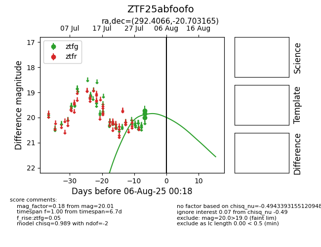

Target ZTF25abfoofo at 2025-08-06 02:22, see:
FINK: fink-portal.org/ZTF25abfoofo
Lasair: lasair-ztf.lsst.ac.uk/objects/ZTF25abfoofo
ALeRCE: alerce.online/object/ZTF25abfoofo
alt names
ZTF25abfoofo (ztf,fink)
coordinates:
equatorial (ra, dec) = (292.4066,-20.70316)
galactic (l, b) = (18.1225,-17.41451)
photometry
last ztfg=20.01
3 ztfg detections
